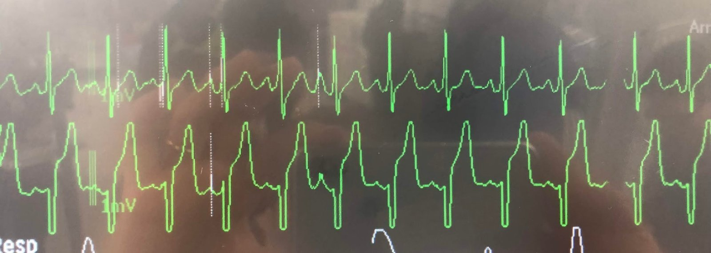
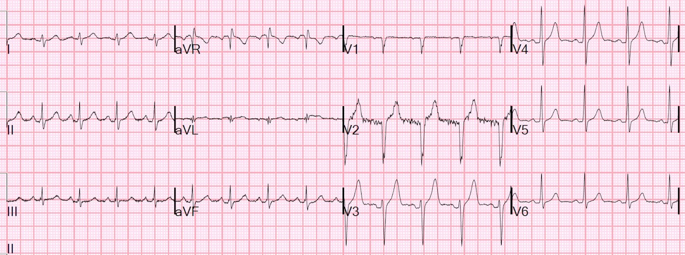
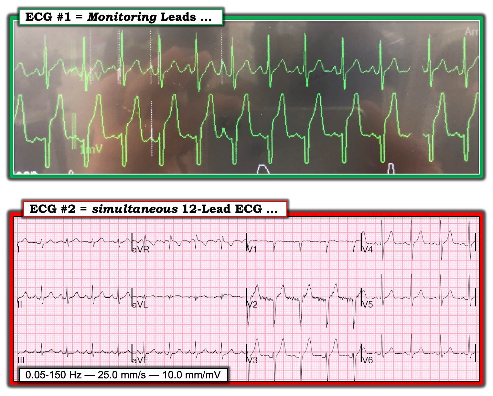
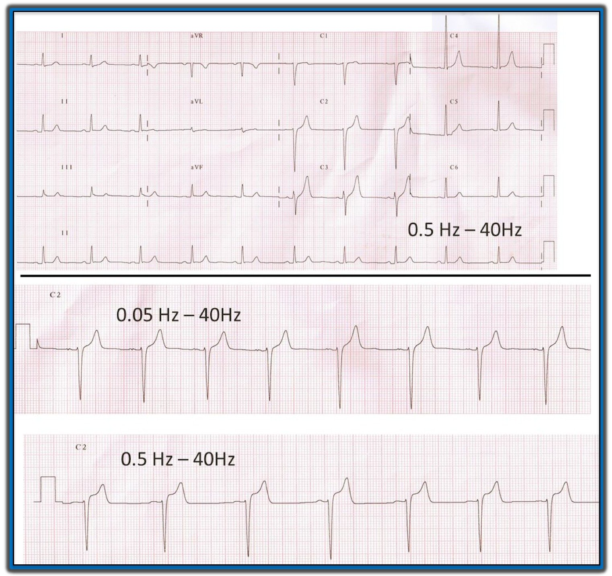

04/03/2019 — Các chuyển đạo theo dõi (monitor) chính xác đến mức nào đối với ST chênh lên?
Bản dịch tiếng Việt của bài "How accurate are the Monitor leads for ST Elevation?" – Dr. Smith’s ECG Blog. Giữ nguyên toàn bộ 6 hình ảnh của bản gốc.
Đây là một nam thanh niên khỏe mạnh, không có vấn đề về tim, nhưng đang được gắn monitor theo dõi:


Có ST chênh lên rất nhiều.
Điều đó có ý nghĩa gì?
Nó không có nhiều ý nghĩa.
Do cách xử lý điện tử khác nhau (mà tôi không hiểu rõ lắm), đoạn ST trên các chuyển đạo theo dõi (monitor) không đáng tin cậy.
Chúng tôi đã ghi một điện tâm đồ 12 chuyển đạo đồng thời. Đây là bản ghi đó:


Điểm cần học:
Đừng hoảng hốt vì ST chênh lên trên các chuyển đạo theo dõi. Đó nhiều khả năng là nhiễu (artifact) do cách xử lý điện tử khác nhau.
Mặt khác, nên thận trọng ghi một điện tâm đồ 12 chuyển đạo để đánh giá tính xác thực của ST chênh lên thấy trên monitor.

===================================
Bình luận của KEN GRAUER, MD (4/3/2019):
===================================
Điểm quan trọng được nêu bật trong bài này là những thay đổi ST-T thấy trên monitor có thể rất ít liên quan đến hình dạng thực tế của thay đổi ST-T trên điện tâm đồ 12 chuyển đạo chuẩn.
- Theo Dr. Smith — Khi thấy điều gì đó có khả năng đáng lo ngại trên monitor (tức là ST chênh lên hoặc chênh xuống đáng kể) — thì hãy ngay lập tức ghi một điện tâm đồ 12 chuyển đạo đầy đủ để xác định xem điều bạn thấy có phải (hay không phải) là một hiện tượng “thật”.
- Khả năng hình dạng ST-T bất thường trên monitor phản ánh thiếu máu cục bộ cấp hoặc nhồi máu sẽ cao hơn NẾU — bạn đã theo dõi bệnh nhân trong một thời gian, và không hề thay đổi vị trí đặt điện cực, rồi bạn đột nhiên nhận thấy một sự khác biệt về hình dạng ST-T. Nhưng bất kể đã theo dõi liên tục từ trước hay bạn vừa mới bắt đầu theo dõi từ xa (telemetry) — ngay cả ST chênh xuống hoặc chênh lên rõ rệt cũng có thể không phải là “thật”.
- ĐIỀU CỐT LÕI: Cách duy nhất để xác định ST chênh lên hoặc chênh xuống trên một chuyển đạo theo dõi có thật hay không — là ngay lập tức ghi một điện tâm đồ 12 chuyển đạo.
====================
BÌNH LUẬN: Dù còn xa mới là chuyên gia trong lĩnh vực Cài đặt bộ lọc — những khái niệm cơ bản mà tôi luôn ghi nhớ như sau:
- Thông thường, các cài đặt khác nhau được dùng khi ghi điện tâm đồ, tùy theo trọng tâm là xác định nhịp hay chẩn đoán (với trọng tâm của chẩn đoán là đọc các dạng sóng của 12 chuyển đạo).
- Ở chế độ theo dõi thường dùng mức lọc mạnh hơn, với cài đặt tần số hay gặp là trong khoảng từ 0.5 Hz đến 40 Hz (Hz = Hertz). Làm như vậy có ưu điểm là giảm thiểu nhiễu và trôi đường nền vốn có thể ảnh hưởng đến việc đọc nhịp.
- Ngược lại — một dải thông rộng hơn (thường từ 0.05 Hz đến 150 Hz) được khuyến cáo cho chế độ chẩn đoán, trong đó trọng tâm là phân tích đoạn ST chính xác ở mức tối ưu.
Ví dụ — hãy hình dung bạn đang xem một điện tâm đồ 12 chuyển đạo ghi “40 Hz” là cài đặt tần số ở phía dưới bản ghi. Giá trị 40 Hz này là cài đặt bộ lọc thông THẤP (tức là cho các tín hiệu có tần số THẤP HƠN giá trị này đi qua) — mà không nêu giới hạn của bộ lọc thông CAO. Nếu cài đặt bộ lọc thông CAO (tức là cho các tín hiệu có tần số CAO HƠN giá trị này đi qua) là mức điển hình dùng khi theo dõi (tức là 0.5 thay vì 0.05 Hz) — thì cài đặt bộ lọc từ 0.5 đến 40 Hz này có thể góp phần làm biến dạng ST-T và/hoặc tạo hình ảnh ST chênh lên giả, trong khi thực tế không hề có. Việc dùng dải lọc hẹp quá mức này cũng có thể gây ra những thay đổi khác ở các chi tiết tinh tế về hình dạng sóng Q, phức bộ QRS và dạng sóng ST-T.
- Cài đặt tần số được khuyến cáo chung cho việc đọc điện tâm đồ ở Chế độ Chẩn đoán Điện tâm đồ 12 Chuyển đạo ở người lớn là 0.05 đến 150 Hz. Ở nhũ nhi hoặc trẻ nhỏ có thể dùng giới hạn tần số trên còn cao hơn nữa. Nếu nhiễu do cơ quá nhiều, có thể phải chấp nhận dùng dải cài đặt hẹp hơn từ 0.05 đến 100 Hz (hoặc 0.05 đến 40 Hz) — nhưng nên thử trước dải 0.05 đến 150 Hz được khuyến cáo. Điểm MẤU CHỐT: Nếu cần phải chấp nhận thỏa hiệp về cài đặt bộ lọc, thì ít nhất hãy lưu ý rằng độ trung thực khi phân tích đoạn ST có thể kém hơn mức tối ưu. Điều này giải thích vì sao không nên dùng các dải nhịp từ chuyển đạo theo dõi để phân tích đoạn ST. Người ta có thể được cảnh báo về khả năng/nhiều khả năng có ST chênh lên hoặc chênh xuống dựa trên những thay đổi thấy trên dải nhịp — nhưng khi điều đó quan trọng về mặt lâm sàng, phải luôn luôn kiểm chứng lại trên một bản ghi 12 chuyển đạo.
====================
Để so sánh — tôi đã đặt dải theo dõi 2 chuyển đạo của bệnh nhân này cạnh điện tâm đồ 12 chuyển đạo ghi đồng thời (Hình 1). Đáng tiếc là các thông số ghi (tức là cài đặt tần số bộ lọc — tốc độ giấy — chuẩn điện thế) đã bị cắt mất khỏi bản ghi 12 chuyển đạo.
- Để minh họa — tôi đã mạn phép thêm vào dải tần số bộ lọc tối ưu cho một điện tâm đồ 12 chuyển đạo (tức là 0.05 đến 150 Hz) — tốc độ giấy chuẩn tại Hoa Kỳ (tức là 25 mm/giây) — và chuẩn điện thế tiêu chuẩn (tức là 10 mm/mV).


====================
ĐỀ XUẤT: Nếu trước đây bạn chưa để ý đến cài đặt bộ lọc — Hãy bắt đầu tìm chúng! Thường chúng được ghi ở phía dưới điện tâm đồ (tương tự cách chúng xuất hiện trong Hình 1). THÚ NHẬN: Tôi hoàn toàn thừa nhận rằng tôi đã trải qua nhiều năm trong sự nghiệp với tư cách một “người say mê điện tâm đồ” cho đến khi cuối cùng mới bắt đầu chú ý đến các cài đặt này. Điều này thực sự quan trọng — vì việc dùng một cài đặt bộ lọc khác có thể là lý do khiến độ lệch đoạn ST (chênh lên hoặc chênh xuống) tạo ra ấn tượng sai lầm về sự khác biệt của ST chênh lên hoặc chênh xuống giữa các điện tâm đồ liên tiếp ghi trên cùng một bệnh nhân!
- Cái hay của 2 bản ghi trong ca này (Hình 1) — là dải theo dõi gợi ý ST chênh lên rõ rệt tại điểm J, trong khi thực tế ST chỉ chênh lên không quá mức tối thiểu trên điện tâm đồ 12 chuyển đạo ghi đồng thời.
- ĐIỀU CỐT LÕI: Cách duy nhất để xác định ST chênh lên hoặc chênh xuống trên một chuyển đạo theo dõi có thật hay không — là ngay lập tức ghi một điện tâm đồ 12 chuyển đạo.

========================
David Richley, người thực sự là chuyên gia trong lĩnh vực này (nguyên là Chuyên viên Sinh lý Tim mạch tại NHS — Vương quốc Anh) — đã viết những dòng sau trên EKG Club (5/3/2019). Tôi đã chép lại bình luận của anh ấy ở đây, và thêm Hình 2 do Dave cung cấp.
========================
Nguyên nhân gây ST chênh lên do nhiễu là việc dùng bộ lọc thông cao kỹ thuật số trong hiển thị điện tâm đồ theo thời gian thực, như khi ghi dải nhịp thủ công hoặc khi theo dõi. Thời máy tương tự (analogue) trước đây, để bảo toàn các thành phần tần số thấp của dạng sóng điện tâm đồ (ví dụ, đoạn ST) — đáp ứng tần số dưới được khuyến cáo cho máy điện tâm đồ là 0.05 Hz. Ngày nay, với máy kỹ thuật số, giới hạn dưới được khuyến cáo là 0.67 Hz — vì mức này giúp triệt nhiễu tần số thấp do trôi đường nền (chẳng hạn do vã mồ hôi hoặc thở sâu) mà không làm biến dạng đoạn ST. Sở dĩ như vậy là vì máy áp dụng bộ lọc thông cao khi thu nhận tín hiệu để giảm nhiễu tần số thấp — nhưng vì việc này làm biến dạng đoạn ST, máy sau đó áp dụng lại bộ lọc theo chiều ngược lại để đảo ngược sự biến dạng. Tuy nhiên, máy chỉ làm được điều này khi một điện tâm đồ hoàn toàn tự động được ghi vào bộ nhớ của máy. Nếu điện tâm đồ được ghi theo thời gian thực — bộ lọc chỉ có thể được áp dụng theo một chiều, và sự biến dạng ST không thể được hiệu chỉnh. Vì vậy, với dải nhịp thủ công hoặc theo dõi điện tâm đồ, đáp ứng tần số dưới nên là 0.05 Hz nếu muốn tránh ST chênh lên do nhiễu.


========================